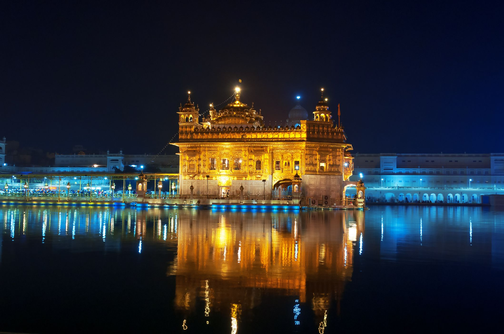

Kedarnath Temple , Kedarnath

Overview
Located near the head of Mandakini river and believed to have been built by the Pandavas to please Lord Shiva, Kedarnath Temple is one of the Char Dhams (where Hindus can achieve instant moksha). It is one of the holiest shrines dedicated to Lord Shiva.
Suggested Duration For Exploring :
Around 2 - 3 Hours
What To Expect?
Start off with offering prayers at the main shrine where the 'Kedarnath Lingam' is housed. Constructed using grey stones and without the use of any mortar, the architecture of the temple is worth admiring. Also, the temple offers stunning views of snow-capped peaks of Kedar Massif.
Tips :
- The temple remains open from the month of April till November.
- You will need to trek a distance of 22 k.m., from the nearest motorable road.
- For those who wish to avoid trekking to the temple, helicopter services are also available.
Exploring a destination...
The stunningly beautiful Himalayan mountains witness one of India's most precious holy sites, Kedarnath Temple, located at an astounding altitude of 3583 metres (11,755 feet) above sea level in Uttarakhand state. This revered temple symbolises profound spiritual significance and cultural heritage that evokes devotion amongst Hindus worldwide. Hindu mythology has it that this temple existed for over a thousand years now dedicated to Lord Shiva who finds his place among the prominent deities worshipped by Hindus. Despite several historical accounts, the exact construction date of this temple is not documented. However, ancient Hindu texts such as Mahabharata mention the significance of this temple many times. It is a part of Uttarakhand Char Dham circuit pilgrimage spots that includes Yamunotri, Gangotri and Badrinath.
Best time to Visit Kedarnath temple
If you are considering visiting this temple in Uttarakhand State, then scheduling your trip during summer is a smart choice. Not to mention, the months of May to June as well as September and early October boast favourable weather that's ideal for pilgrimage and travels alike. Additionally, there are fewer chances for harsh weather events like heavy rains or storms, making it an excellent choice for outdoor activities such as trekking.
Times for Visitors :
- Opens: 4 AM
- Closes: 9 PM
Gallery


Similar Destinations...
-
Ram Mandir

-
Golden Temple
-
Kedarnath

-
Tirupati Balaji

-
Dashashwamedh Ghat